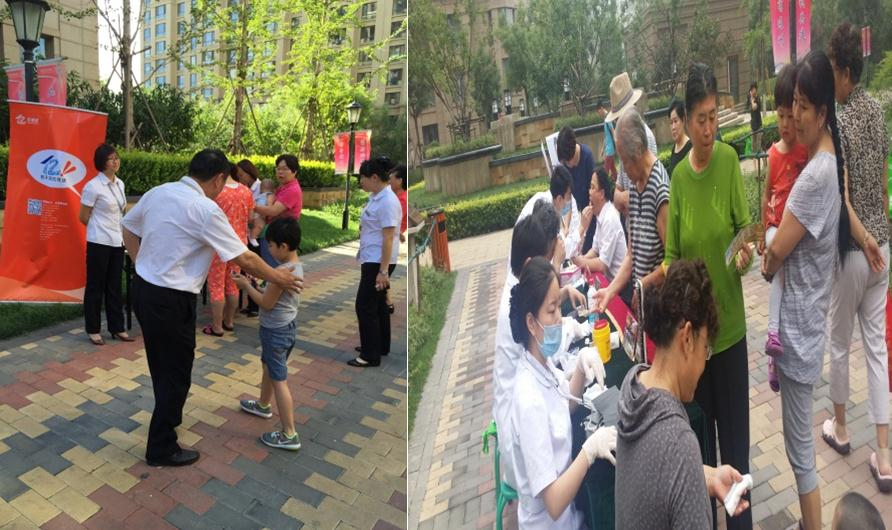

创新案例－远洋东方
发布时间：2016-08-29 来源： 阅读量： 83
一、亿街区各项工作落实与提升，完成了如下创新事项：
1、亿街区工作前期根据公司下发的装机流程及奖励制度对全体员工进行深度剖析，让每位员工都熟知亿街区装机操作及公司的奖励机制。
2、刚开始在扫码工作进行中存在无法判定是谁获得的装机率只是项目整体的数据，存在员工积极性不高的状态，项目积极与亿街区沟通后将二维码分解到项目每个员工身上，方便考核每位员工每天完成多少装机率。并在项目微信群每日晒单，大大提高了员工的积极性。
3、每天在业主进出高峰期，各管理人员主动组织员工到各出入口进行扫码装机工作。
4、物业通过便民服务、健康义诊、组织的各项大型活动的报名资格内加入扫码装机为条件， 获得了大量的装机率与实名认证率。
5、专员在每日的入户走访时随身携带二维码、工程人员入户维修随身携带二维码、保安门岗随身携带二维码、财务收费窗口张贴二维码、前台领取快递也要扫取二维码。
通过项目全体人员的共同努力，远洋东方亿街区各项工作得到了稳步提升，这也离不开每位员工的辛苦和汗水。

图：业主进出高峰期物业全体人员进行扫码

图：组织业主郊游等大型活动扫码
二、创新成果/价值：
1、项目累计装机率（装机量/项目户数）232％；
2、项目累计认证率（累计有效认证/总户数）200％。
三、经验总结：
1、让每位员工熟知操作流程及奖励机制。
2、将指标分解到每位员工提高员工积极性。
3、管理人员起到带头作用。